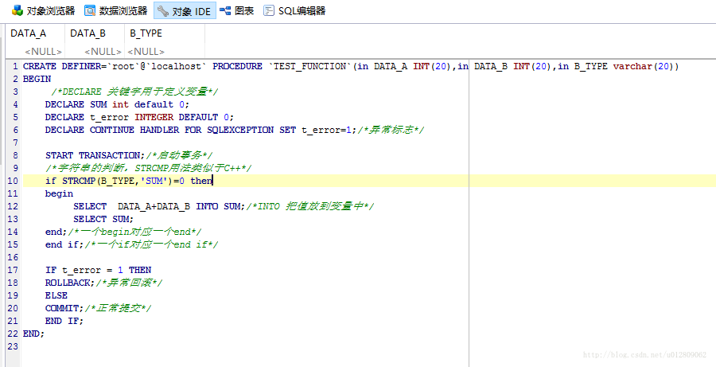
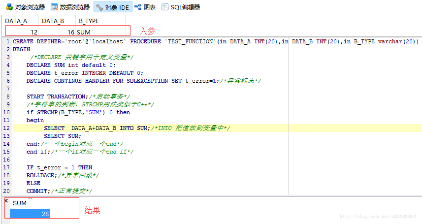
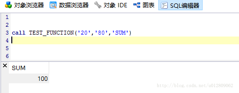

<!DOCTYPE html>
<html>
  <!DOCTYPE html>
<html lang="zh-CN">
<head><meta name="generator" content="Hexo 3.9.0">
  <meta http-equiv="content-type" content="text/html; charset=utf-8">
  <meta http-equiv="X-UA-Compatible" content="IE=Edge,chrome=1">
  
  <title>Mysql存储过程 - zgshen&#39;s note</title>
  <meta name="viewport" content="width=device-width, initial-scale=1.0, maximum-scale=1.0, user-scalable=0">
  
  <meta name="keywords" content="数据库">
  
  
    <link rel="shortcut icon" type="image/x-icon" href="/favicon.ico?v=1.02">
  
  
    <link rel="alternate" href="/atom.xml " title="zgshen&#39;s note" type="application/atom+xml">
  

  <link rel="stylesheet" href="/css/style.css">
</head></html>
  <body>
    <div class="container">
      <header class="header">
  <div class="blog-title">
    <a href="/" class="logo">zgshen&#39;s note</a>
    <div class="subtitle"></div>
  </div>
  <nav class="navbar">
    <ul class="menu">
      
        <li class="menu-item">
          <a href="/" class="menu-item-link">主页</a>
        </li>
      
        <li class="menu-item">
          <a href="/about" class="menu-item-link">关于</a>
        </li>
      
        <li class="menu-item">
          <a href="https://www.google.com/search?q=site:zguishen.com/" class="menu-item-link">搜索</a>
        </li>
      
    </ul>
  </nav>
</header>
<article class="post">
  <div class="post-title">
    <h1 class="article-title">Mysql存储过程</h1>
  </div>
   <div class="post-meta">
    <span class="post-time">2017-02-26</span>
  </div>
  <div class="post-content">
    <blockquote>
<p>当需要实现复杂的逻辑，需要写多条sql语句或写的sql比较复杂时，可以考虑使用存储过程来处理，最终返回需要的结果集。存储过程即一组SQL语句集。</p>
</blockquote>
<p>存储过程的基本语法也不算复杂，以下为创建一个存储过程的模板<br><a id="more"></a><br><figure class="highlight sql"><table><tr><td class="gutter"><pre><span class="line">1</span><br><span class="line">2</span><br><span class="line">3</span><br><span class="line">4</span><br><span class="line">5</span><br><span class="line">6</span><br><span class="line">7</span><br><span class="line">8</span><br><span class="line">9</span><br><span class="line">10</span><br><span class="line">11</span><br><span class="line">12</span><br><span class="line">13</span><br><span class="line">14</span><br><span class="line">15</span><br><span class="line">16</span><br><span class="line">17</span><br><span class="line">18</span><br><span class="line">19</span><br><span class="line">20</span><br><span class="line">21</span><br><span class="line">22</span><br><span class="line">23</span><br><span class="line">24</span><br></pre></td><td class="code"><pre><span class="line"><span class="keyword">DROP</span> <span class="keyword">PROCEDURE</span> <span class="keyword">IF</span> <span class="keyword">EXISTS</span> TEST_FUNCTION;</span><br><span class="line"><span class="comment">/*定义存储过程名称，设置入参，指定类型和大小*/</span></span><br><span class="line"><span class="keyword">CREATE</span> <span class="keyword">PROCEDURE</span> TEST_FUNCTION(<span class="keyword">in</span> DATA_A <span class="built_in">INT</span>(<span class="number">20</span>),<span class="keyword">in</span> DATA_B <span class="built_in">INT</span>(<span class="number">20</span>),<span class="keyword">in</span> B_TYPE <span class="built_in">varchar</span>(<span class="number">20</span>))</span><br><span class="line"><span class="keyword">BEGIN</span></span><br><span class="line">     <span class="comment">/*DECLARE 关键字用于定义变量*/</span></span><br><span class="line">    <span class="keyword">DECLARE</span> <span class="keyword">SUM</span> <span class="built_in">int</span> <span class="keyword">default</span> <span class="number">0</span>;</span><br><span class="line">    <span class="keyword">DECLARE</span> t_error <span class="built_in">INTEGER</span> <span class="keyword">DEFAULT</span> <span class="number">0</span>;</span><br><span class="line">    <span class="keyword">DECLARE</span> CONTINUE <span class="keyword">HANDLER</span> <span class="keyword">FOR</span> SQLEXCEPTION <span class="keyword">SET</span> t_error=<span class="number">1</span>;<span class="comment">/*异常标志*/</span></span><br><span class="line">    </span><br><span class="line">    <span class="keyword">START</span> <span class="keyword">TRANSACTION</span>;<span class="comment">/*启动事务*/</span></span><br><span class="line">    <span class="comment">/*字符串的判断，STRCMP用法类似于C++*/</span></span><br><span class="line">    if STRCMP(B_TYPE,'SUM')=0 then</span><br><span class="line">    <span class="keyword">begin</span></span><br><span class="line">         <span class="keyword">SELECT</span>  DATA_A+DATA_B <span class="keyword">INTO</span> <span class="keyword">SUM</span>;<span class="comment">/*INTO 把值放到变量中*/</span></span><br><span class="line">         <span class="keyword">SELECT</span> <span class="keyword">SUM</span>;</span><br><span class="line">    <span class="keyword">end</span>;<span class="comment">/*一个begin对应一个end*/</span></span><br><span class="line">    <span class="keyword">end</span> <span class="keyword">if</span>;<span class="comment">/*一个if对应一个end if*/</span></span><br><span class="line">    </span><br><span class="line">    IF t_error = 1 THEN  </span><br><span class="line">    <span class="keyword">ROLLBACK</span>;<span class="comment">/*异常回滚*/</span></span><br><span class="line">    ELSE</span><br><span class="line">    <span class="keyword">COMMIT</span>;<span class="comment">/*正常提交*/</span></span><br><span class="line">    <span class="keyword">END</span> <span class="keyword">IF</span>;</span><br><span class="line"><span class="keyword">END</span>;</span><br></pre></td></tr></table></figure></p>
<p>创建生成的样子</p>
<p></p>
<p>DEFINER的信息是’用户名‘@’host’</p>
<p>输入参数值测试<br></p>
<p>调用存储使用call命令<br></p>

  </div>
  <div class="post-footer">
    
      <ul class="post-tag-list"><li class="post-tag-list-item"><a class="post-tag-list-link" href="/tags/数据库/">数据库</a></li></ul>
    

    <a href="#top" class="top">返回顶部</a>
  </div>
</article>
<footer>
  &copy; 2021
  <span class="author">
    zguishen
  </span>
</footer>
    </div>
	<script async src="https://www.googletagmanager.com/gtag/js?id=GA_MEASUREMENT_ID"></script>
	<script>
	  window.dataLayer = window.dataLayer || [];
	  function gtag(){dataLayer.push(arguments);}
	  gtag('js', new Date());
	  gtag('config', 'UA-106347761-1');
	</script>
  </body>
</html>